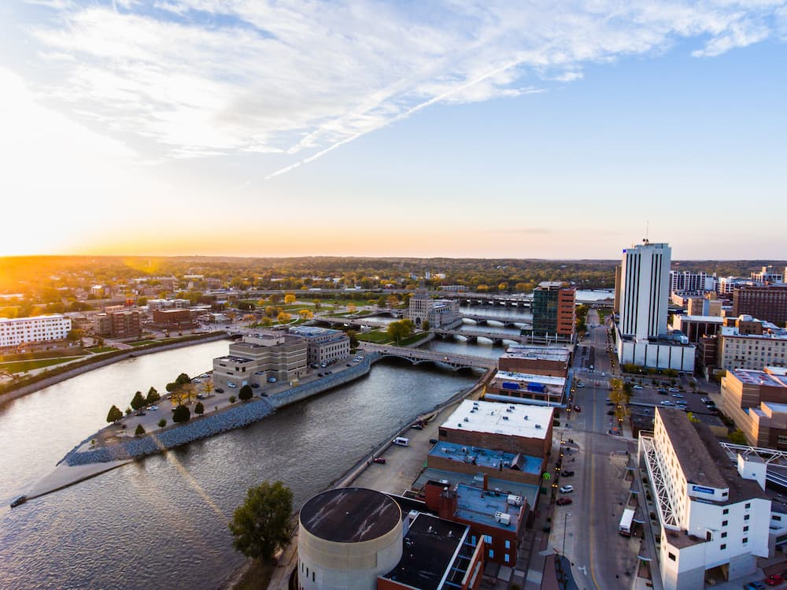

Cedar Rapids sits in eastern Iowa and packs in plenty of culture. You can browse an impressive Grant Wood collection at the Cedar Rapids Museum of Art, tour the 1880s Brucemore estate with its sprawling gardens and local-history exhibits, and unwind at Bever Park’s ice rink, pool, and small farm. The National Czech and Slovak Museum and Library also highlights the stories and heritage of 19th-century immigrants.
City of Five Seasons
Cedar Rapids
